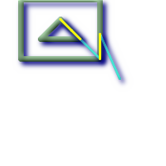

ST_SharedPaths — Returns a collection containing paths shared by the two input linestrings/multilinestrings.
geometry ST_SharedPaths(geometry lineal1, geometry lineal2);
Returns a collection containing paths shared by the two input geometries. Those going in the same direction are in the first element of the collection, those going in the opposite direction are in the second element. The paths themselves are given in the direction of the first geometry.
Availability: 2.0.0 requires GEOS >= 3.3.0.
A multilinestring and a linestring |
 The shared path of multilinestring and linestring overlaid with original geometries.
SELECT ST_AsText(
ST_SharedPaths(
ST_GeomFromText('MULTILINESTRING((26 125,26 200,126 200,126 125,26 125),
(51 150,101 150,76 175,51 150))'),
ST_GeomFromText('LINESTRING(151 100,126 156.25,126 125,90 161, 76 175)')
)
) As wkt
wkt
-------------------------------------------------------------
GEOMETRYCOLLECTION(MULTILINESTRING((126 156.25,126 125),
(101 150,90 161),(90 161,76 175)),MULTILINESTRING EMPTY)
|
-- same example but linestring orientation flipped
SELECT ST_AsText(
ST_SharedPaths(
ST_GeomFromText('LINESTRING(76 175,90 161,126 125,126 156.25,151 100)'),
ST_GeomFromText('MULTILINESTRING((26 125,26 200,126 200,126 125,26 125),
(51 150,101 150,76 175,51 150))')
)
) As wkt
wkt
-------------------------------------------------------------
GEOMETRYCOLLECTION(MULTILINESTRING EMPTY,
MULTILINESTRING((76 175,90 161),(90 161,101 150),(126 125,126 156.25)))
|